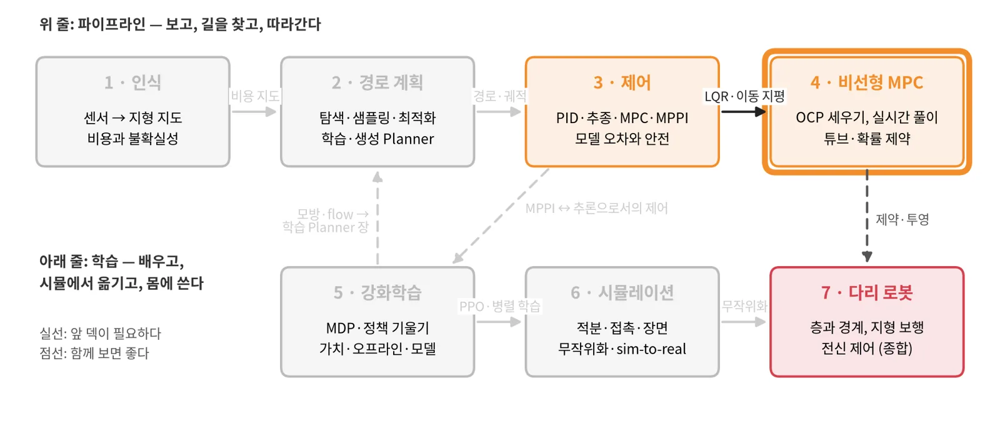
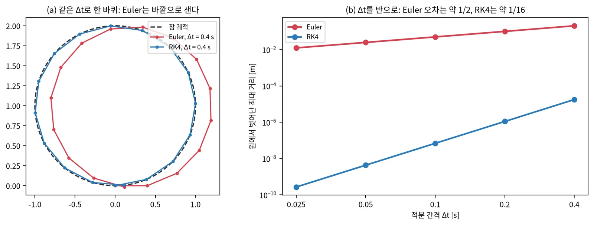
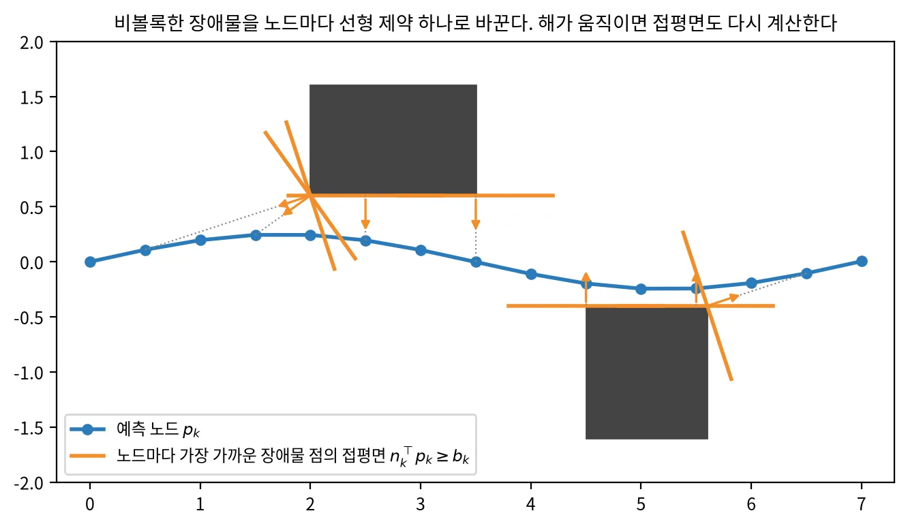
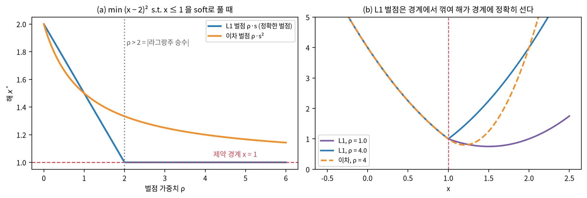
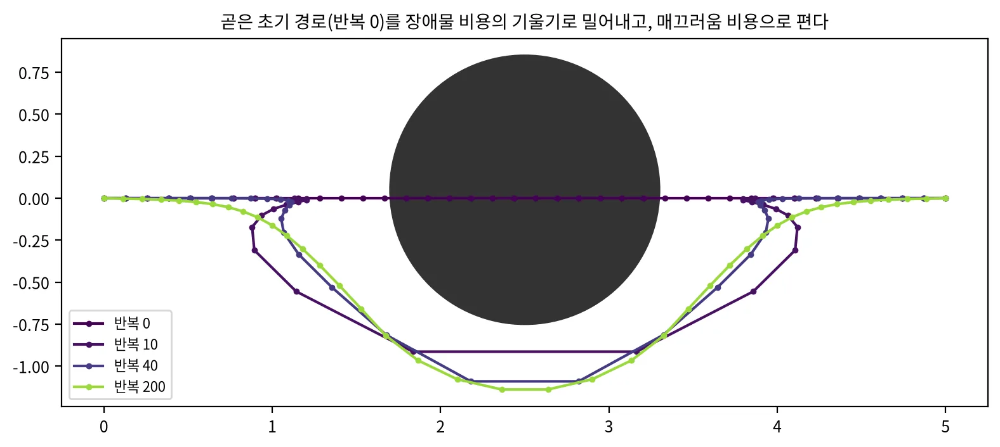
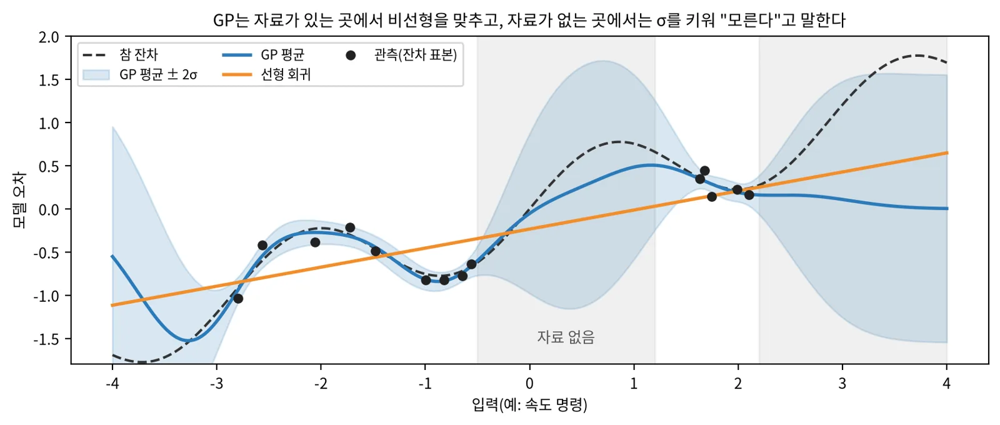
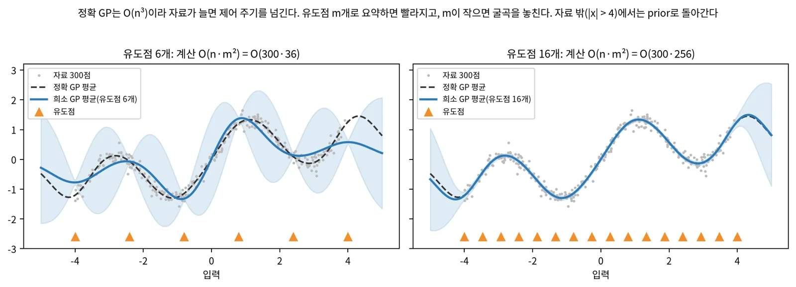
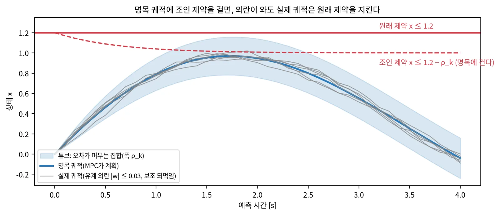

비선형 MPC 구축 기초 · 개념 공부 덱
최적 제어 문제를 세우고
제어 주기 안에 푼다
모델·비용·제약으로 OCP를 세우는 법, SQP·RTI로 실시간에 푸는 법, 학습 잔차·튜브로 모델 오차를 다루는 법 — 그림과 배경지식과 장단점으로
OCP
적분기 · 제약 · soft
SQP · RTI · 솔버
GP 잔차 · 희소 GP
튜브 · 확률 제약
순서
문제 세우기, 풀기, 모델 오차 다루기의 세 단계로 간다
| 장 | 주제 | 답하는 질문 |
|---|---|---|
| 0 | 시작 | 어떤 최적화 배경이 필요하고, 언제 NMPC를 쓰나? |
| 1 | OCP 세우기 | 모델·적분기·비용·제약을 어떻게 고르나? 매끄럽지 않은 것은? |
| 2 | 실시간으로 풀기 | SQP·RTI는 무엇이고, 어떤 솔버를 쓰나? 국소해는? |
| 3 | 모델 오차와 불확실성 | 학습 잔차는 어떻게 넣고, 제약은 얼마나 조이나? |
| 4 | 최근 흐름 | 2025–2026 연구는 무엇을 함께 하고 어디서 갈리나? |
| 5 | 정리 | 장단점 표, 흔한 함정, 공부 순서 |
0 · 커리큘럼 4/7
제어 덱의 MPC를 직접 세우고 실시간으로 푼다

3 제어의 2장(LQR, 이동 지평)과 4장(잔차·GP). 볼록성·KKT·뉴턴법(0장에서 정리).
제약과 튜브 → 7 다리 로봇의 투영·안전. 모델 기반 계획 → 5 강화학습 4장과 비교.
2 경로 계획의 궤적 최적화(CHOMP·TEB)는 같은 최적화를 계획 쪽에서 본 것이다. 적분기 → 6 시뮬레이션 1장.
0 · 배경지식
네 가지 최적화 배경지식이면 이 덱을 따라올 수 있다
볼록이면 국소해 = 전역해
선형 모델 + 이차 비용 + 볼록 제약은 QP라 빠르고 유일하다. 비선형 모델이나 장애물은 비볼록이라 국소해가 여럿이다.
제약 최적해의 필요조건
\(\nabla f + \sum \lambda_i \nabla g_i = 0,\ \lambda_i \ge 0,\ \lambda_i g_i = 0\). 승수 λ는 "제약을 조금 풀면 비용이 얼마나 주나"다.
국소 이차 근사를 반복해 푼다
해 근처에서 매우 빠르게(이차 수렴) 수렴한다. 초기값이 멀면 엉뚱한 곳으로 간다.
연속 시간 모델을 스텝으로
\(\dot x = f(x,u)\)를 적분기로 \(x_{k+1} = F(x_k, u_k)\)로 바꾼다. 적분기 선택이 정확도와 계산을 정한다.
0 · 언제 NMPC인가
표본 기반 MPC는 비매끄러운 비용을, NMPC는 제약을 잘 다룬다
표본으로 절벽 같은 비용을 넘는다
- 격자 장애물·이진 충돌을 그대로
- Jacobian 불필요, GPU 병렬
- 제약은 벌점·확률로 근사
제약을 조일 자리가 있다
- hard 제약과 slack을 명시적으로
- 튜브·확률 제약으로 제약을 조인다
- 학습 잔차를 모델에 넣는다
| 상황 | 더 맞는 쪽 |
|---|---|
| 비용이 격자·충돌 판정처럼 계단이다 | MPPI |
| 속도·가속·자세 한계를 반드시 지켜야 한다 | NMPC |
| 모델 불확실성으로 제약을 조이고 싶다 | NMPC(튜브), MPPI(확률 제약) |
| CPU만 있고 상태·입력 차원이 작다 | NMPC |
0 · OCP의 구성
최적 제어 문제는 여섯 부품으로 이루어진다
무엇을 예측하고 무엇을 고르나. 입력을 변화율로 두면 가속 한계를 상자로 건다.
\(F\): 연속 모델 + 적분기(Euler, RK4).
N × Δt. 길면 멀리 보지만 무겁다.
추종 오차, 입력 크기, 매끄러움.
입력·상태 상자, 장애물, 자세.
\(V_f\), \(\mathcal X_f\): 지평 너머를 대신한다.
1 · OCP 세우기
풀 수 있는 꼴로 세우는 것이
푸는 것보다 먼저다
매끄러운 것은 비용으로, 끊기는 것은 제약으로, 비볼록한 것은 노드마다 선형으로.
1 · 모델과 상태 선택
속도를 상태에 넣으면 가속 한계를 단순한 상자 제약으로 건다
| 항목 | 예(전방향 이동 로봇) |
|---|---|
| 상태 | \((x, y, \theta, v_x, v_y, \omega)\) |
| 입력 | \(u = (a_x, a_y, \alpha_z)\): 속도의 변화율 |
| 제약 | \(|v| \le v_{\max}\), \(|u| \le a_{\max}\) — 둘 다 상자 |
| d | 모델 오차(뒤의 학습 잔차 자리) |
가속·저크 한계가 상자 제약이 되고, 명령이 매끄럽다.
상태가 늘어 문제가 커진다. 실제 구동 지연은 여전히 모델 밖이다.
바퀴 역기구학처럼 atan2·반전이 있는 식은 넣지 않고, 차체 수준 제약으로 번역한다.
1 · 적분기
같은 간격이면 RK4가 Euler보다 훨씬 정확하고, 계산은 네 배다

모델 평가 1회. 오차 \(O(\Delta t)\). 간격이 작을 때나 빠른 시험용.
모델 평가 4회. 오차 \(O(\Delta t^4)\). 같은 정확도를 훨씬 큰 간격으로 — 노드 수를 줄인다.
1 · 비용
추종 비용은 선형 최소제곱으로 두고, 종단 비용이 진행을 맡는다
y가 상태·입력의 선형 함수면 Gauss-Newton Hessian이 정확하다. 풀이가 빠르고 안정적이다.
위치는 크게, 옆걸음·회전·가속은 작게. 단위가 다르면 크기를 맞춰 정규화한다.
지평 끝에서 목표 쪽으로 끌어당긴다. 크면 진행이 강하고, 작으면 지평이 짧을 때 멈춘다.
경로만 있으면 원하는 속도로 시간을 매겨 시간 인덱스 참조로 만든다. 시간 붙은 궤적이면 그대로 쓴다.
매끄럽고 미분 가능한 것만: 추종, 입력 크기, 매끄러움, 완만한 지형 비용.
1 · 장애물 제약
비볼록한 장애물은 노드마다 가장 가까운 점의 접평면 하나로 바꾼다

| 장애물 넣는 법 | 장점 | 단점 |
|---|---|---|
| 노드별 접평면(파라미터) | 선형 제약, 좁은 틈도, 재생성 불필요 | 해가 움직이면 다시 계산(반복 필요) |
| 원·타원 거리 제약 | 매끄럽다, 장애물이 적을 때 간단 | 벽·연석 같은 긴 모양에 약하다 |
| 매끄러운 비용장 근사(RBF·다항식) | 한 식으로 지도 전체 | 근사 오차, 날카로운 경계 흐림 |
1 · soft 제약
L1 벌점은 가중치가 충분히 크면 hard 제약과 같은 해를 주고, 늘 풀린다

나쁜 초기해나 외란으로 hard 제약을 만족할 수 없으면 QP가 실패한다. 풀리지 않는 문제는 안전이 아니라 무작위다.
안전 제약은 L1 + 큰 ρ(정확한 벌점), 이차 항을 조금 더해 수치를 안정시킨다. 위반량은 따로 기록한다.
1 · 무엇을 어디에
매끄러운 것은 비용으로, 끊기는 것은 제약으로, 목표는 종단으로 보낸다
| 원하는 것 | OCP에서 | 이유 |
|---|---|---|
| 참조를 따라간다 | 단계 비용(선형 최소제곱) | 매끄럽고 이차 |
| 목표 쪽으로 진행한다 | 종단 비용 | 짧은 지평의 근시안 보완 |
| 명령을 아낀다, 매끄럽게 | 입력·변화율 이차 비용 | 매끄럽다 |
| 완만한 경사·거칠기를 피한다 | 보간한 지형 비용 | 보간이 매끄러워야 한다 |
| 치명 영역에 들어가지 않는다 | 노드별 반평면 제약(soft L1) | 계단이라 기울기 없음 |
| 사람과 거리를 둔다 | 시간가변 반평면·거리 제약 | 예측 위치가 시각마다 다르다 |
| 속도·가속·자세 한계 | 상자 제약 | 반드시 지킨다 |
핵심: 불확실성으로 조일 것은 제약으로 둬야 한다. 비용에 녹아 있으면 튜브·확률 제약이 붙을 자리가 없다.
1 · 장단점
OCP 설계의 선택은 정확도, 풀이 속도, 견고함을 맞바꾼다
| 선택 | 한쪽 | 다른 쪽 |
|---|---|---|
| 지평 | 길게: 멀리 보지만 무겁다 | 짧게: 빠르지만 근시안(종단 비용으로 보완) |
| 적분기 | Euler: 싸지만 부정확 | RK4: 정확, 큰 간격 가능 |
| 모델 | 기구학: 단순, 지연·슬립 모름 | 동역학: 정확, 파라미터·계산 증가 |
| 장애물 | 노드별 반평면: 정확, 반복 필요 | 매끄러운 근사: 한 식, 경계 흐림 |
| 제약 | hard: 보장, 불능 위험 | soft L1: 늘 풀림, 큰 ρ면 같은 해 |
출발점: 기구학 모델 + RK4 + 선형 최소제곱 비용 + soft L1 제약. 문제가 보이는 곳만 하나씩 바꾼다.
2 · 실시간으로 풀기
매 주기 완벽히 풀지 않고,
한 걸음씩 꾸준히 고친다
SQP는 비선형 문제를 QP의 연속으로, RTI는 그 한 걸음을 주기마다 한 번.
2 · SQP
SQP는 비선형 문제를 지금 해 근처의 QP로 근사해 반복해서 푼다
① 선형화
지금 해 \((\bar x, \bar u)\)에서 모델·제약의 Jacobian
→
② 이차 근사
비용의 Hessian(Gauss-Newton: \(J^\top W J\))
→
③ QP 풀기
희소 구조를 쓰는 QP 솔버(HPIPM 등)
→
④ 갱신
\((\bar x, \bar u) \leftarrow (\bar x, \bar u) + \alpha\,\Delta\)
최소제곱 비용이면 2차 미분 없이 Hessian을 근사. 늘 양반정치라 안정적.
시간 단계마다 이웃만 묶이는 띠 구조. 리카티식 풀이로 지평에 선형인 계산.
해 근처에서 빠르다. 멀면 선 탐색·신뢰 영역이 필요하다.
2 · 실시간 반복
RTI는 주기마다 SQP 한 걸음만 가고, 준비 단계를 측정 전에 미리 한다
준비 단계
측정이 오기 전: 이전 해를 한 칸 밀고, 선형화와 QP 행렬 준비
→
측정 도착
\(x_0 = \hat x\)
→
피드백 단계
QP 한 번만 풀어 첫 입력을 바로 낸다
→
다음 주기
문제가 조금만 바뀌므로 한 걸음씩 수렴을 따라간다
측정에서 명령까지 지연이 QP 한 번뿐이다. 주기가 짧으면 해가 연속적으로 따라간다.
해가 크게 움직이면(새 장애물, 큰 외란) 한 걸음으로 부족하다. 리셋 직후·제약이 해에 매달려 있으면 반복을 늘린다.
제약이 지금 해에 의존해 다시 계산되는 경우(노드별 접평면), 한 주기에 RTI를 몇 번 반복하고 soft 제약의 벌점을 충분히 크게 해야 해와 제약이 만난다. 둘 중 하나만 바꾸면 부족한 경우가 많다.
Diehl 외, Real-Time Iteration Scheme for Nonlinear Optimization in Optimal Feedback Control, SIAM J. Control Optim. 2005
2 · 도구
모델링 도구, NLP 풀이기, QP 풀이기를 구별해 고른다
| 도구 | 역할 | 장점 | 단점 |
|---|---|---|---|
| CasADi | 기호 모델링·자동 미분 | 유연, 여러 풀이기 연결 | 그 자체로 실시간 MPC 전용은 아님 |
| IPOPT | 내점법 NLP 풀이기 | 견고, 오프라인 최적 해 | 매 주기 실시간엔 무겁다 |
| acados | MPC 전용 SQP·RTI + C 코드 생성 | 빠르다, 임베디드 | 설정 항목이 많다 |
| HPIPM | MPC 구조 QP(내점법) | 띠 구조 활용, 빠름 | QP 전용 |
| qpOASES | 활성 집합 QP | 따뜻한 시작에 강함 | 큰 문제에 느림 |
| OSQP | ADMM QP | 단순, 큰 희소 문제 | 정밀도가 낮을 수 있다 |
흔한 조합: CasADi로 모델을 쓰고, acados가 RK 적분기·SQP-RTI·HPIPM을 묶은 C 코드를 생성한다.
2 · 국소해와 초기값
비볼록 문제는 초기값이 어느 쪽에 있느냐로 해가 정해진다

가장 흔한 따뜻한 시작. 상황이 크게 바뀌면 낡은 위상에 갇힌다.
전역 계획기나 학습 Planner의 궤적을 초기값으로. 위상을 위에서 정한다.
후보 여럿을 병렬로 풀고 가장 좋은 것을. 계산이 배로 든다.
2 · 장단점
풀이 방식은 정확도와 지연을 맞바꾼다
| 방식 | 장점 | 단점 |
|---|---|---|
| 수렴까지 SQP | 정확한 국소 최적 | 시간이 들쭉날쭉, 주기를 넘길 수 있다 |
| RTI(주기당 1회) | 지연이 짧고 일정 | 해가 크게 바뀌면 따라가지 못한다 |
| RTI 여러 회 | 중간 | 시간 예산 안에서 반복 수를 정해야 |
| 내점법 NLP | 견고, 나쁜 초기값에 강함 | 실시간에 무겁다 |
| 학습 초기값 + SQP | 위상 선택을 학습에 맡긴다 | 학습이 틀리면 나쁜 위상에서 시작 |
원칙: 평균이 아니라 최악의 풀이 시간을 재고, 실패(불능·최대 반복)를 기록한다.
3 · 모델 오차와 불확실성
명목 모델에 잔차를 더하고,
그 불확실성만큼 제약을 조인다
학습 잔차는 파라미터로 넣고, 튜브와 확률 제약이 여유를 정한다.
3 · 학습 잔차
잔차의 평균을 노드별 파라미터로 넣으면 0차 근사가 저절로 선다
- 잔차를 이전 해의 예측 노드에서 계산해 상수로 넘긴다
- 풀이기는 \(\partial d / \partial x = 0\)으로 본다 — 이것이 0차 근사
- 탐색 방향은 명목 모델의 미분, 예측에는 잔차가 들어간다
- 코드 재생성이 필요 없고 계산이 거의 늘지 않는다

명목 모델의 구조와 풀이기를 그대로 두고 예측만 고친다.
예측 분산에 관측 잡음을 빼먹으면 과신한다. 자료 밖에서 학습 잔차가 튀면 MPC가 그것을 이용한다.
L4acados (IEEE TCST) — acados에 Python 학습 잔차를 붙이는 틀, 0차 GP-MPC
3 · 희소 GP
정확 GP는 자료가 늘면 주기를 넘기고, 유도점으로 요약하면 실시간에 든다

| 근사 | 학습 계산 | 예측(점당) | 장점 | 단점 |
|---|---|---|---|---|
| 정확 GP | O(n³) | O(n) | 가장 정확 | n이 크면 주기를 넘긴다 |
| 희소 GP(SGPR, 유도점 m) | O(n m²) | O(m) | 자료를 다 쓰고 빠름, 보수적 | m이 작으면 굴곡을 놓침 |
| 무작위 특징(RFF) | O(n D²) | O(D) | 가장 빠름 | 자료 밖에서 튈 수 있다 |
3 · 튜브 MPC
튜브는 외란이 오차를 얼마나 키울 수 있는지만큼 제약을 조인다

외란 집합 안에서 제약 만족이 보장된다. 명목 문제는 원래와 같은 꼴이라 빠르다.
외란 상한을 크게 잡으면 보수적이 되어 좁은 틈을 못 지난다. 상한이 틀리면 보장도 틀린다.
3 · 확률 제약
확률 제약은 조임 폭을 예측 분산의 분위수로 정한다
GP 잔차의 분산을 지평을 따라 전파한다(선형화·무향 변환).
노드별 위반 확률. 지평 전체 보장에는 노드 수만큼 나눠야 한다.
GP의 β-신뢰 타원체를 외란 집합으로 쓰면 튜브 MPC와 이어진다.
| 튜브(유계 외란) | 확률 제약(분포) | |
|---|---|---|
| 가정 | 외란 상한을 안다 | 분포(대개 가우시안)를 안다 |
| 보장 | 집합 안에서 반드시 | 확률 1−ε로 |
| 보수성 | 크다 | ε로 조절 |
| 실패 원인 | 상한이 틀림 | 분산이 과신·과소신(보정 문제) |
3 · 예측 모델의 층
예측 모델은 기구학 → 동역학 → 학습의 세 층으로 쌓는다
| 층 | 담는 것 | 장점 | 단점 |
|---|---|---|---|
| 기구학 | 속도 적분 + 상자·가속 한계 | 단순, 매끄럽다 | 지연·슬립·접촉 모름 |
| 동역학 | 구동기 지연, 슬립, 질량·관성 | 물리적 의미, 적은 자료 | 파라미터 식별, 계산 증가 |
| 학습 | GP·신경망 잔차, 전체 forward 모델 | 식에 없는 효과 | 자료 밖, 이용당함 |
잘 아는 것은 식으로 두고, 식이 못 담는 것만 배운다.
선례: 로봇 몸을 지형 위에서 굴린 forward 모델 + 표본 MPC는 6초 궤적 1,500개를 3 ms에 굴린다(Kim 외, RSS 2022). 액추에이터 망(Hwangbo 외, 2019)은 구동기 동역학을 학습한다.

Kim·Kim·Hwangbo, RSS 2022 — arXiv:2204.08647 · Hwangbo 외, Science Robotics 2019 — arXiv:1901.08652
3 · 검증 리그
시뮬레이터가 MPC 모델과 같으면 아무것도 검증되지 않는다
"모델 = 시뮬레이터"
MPC가 자기 모델로 자기를 예측하면 모델 오차가 0이다. 잔차·튜브·확률 제약의 효과를 잴 수 없다.
명목과 다른 plant로 잰다
지연, 슬립, 하위 제어기, 조향 한계를 가진 plant. 정확한 실물이 아니어도 "다르기만" 하면 된다.
| 층 | 도구 | 쓰임 |
|---|---|---|
| 1 | 운동학 시뮬 + plant 모델 | 빠른 반복, 수천 에피소드 통계 |
| 2 | MuJoCo(CPU) · MuJoCo Warp(GPU) | 접촉·마찰, 잔차 자료 대량 수집 |
| 3 | Isaac Sim 같은 고충실 시뮬 | 센서·인식까지 폐루프 |
| 4 | 실물 | 최종 확인, 잔차 재학습 |
3 · 장단점
모델 오차를 다루는 장치는 정확도, 보장, 계산을 맞바꾼다
| 장치 | 장점 | 단점 |
|---|---|---|
| 동역학 층(지연·슬립 식) | 적은 자료, 큰 효과 | 식에 있는 효과만 |
| 0차 학습 잔차 | 계산 거의 그대로 | 잔차의 미분을 무시, 자료 밖 위험 |
| 희소 GP 잔차 | 분산까지, 실시간 | 근사·커널 선택 |
| 튜브 MPC | 유계 외란에 보장 | 보수적, 상한이 틀리면 무의미 |
| 확률 제약 | ε로 보수성 조절 | 분산 보정에 기댄다 |
순서: 지연을 모델에 → 잔차 평균 → 분산 보정을 잰 뒤 조임. 조임은 효과를 짝 비교로 확인하고 켠다.
4 · 최근 흐름 (2025–2026)
모델을 더 맞게,
초기해를 더 좋게
명목 모델 + 학습 잔차, 불확실성으로 조이기, 학습 모델이 주는 출발점, 지형을 모델과 제약에.
4 · 연구 예
최근 연구는 OCP의 모델, 제약, 초기해 중 하나를 고친다
| 연구 (연·발표) | 고친 곳 | 방법의 핵심 | 실험 |
|---|---|---|---|
| 확산 초기해 MPC (RA-L 2026) | 초기해 | 확산 초안을 SDF hard 제약 OCP가 다듬는다 | Franka 실물 |
| RL 유도 PAC-NMPC (2026) | 초기해·종단 | RL 정책 → 초기해, 가치 → 종단 비용 | 1/10 랠리카 실물 |
| 강건·적응 GP-MPC (Automatica 2026) | 제약 | 수축 계량 위 스칼라 튜브로 GP 오차 전파 | 쿼드로터 시뮬 |
| 데이터에서 강건 MPC까지 (2025) | 제약 | 기록에서 외란 상자, SDP로 튜브 | 쿼드로터 시뮬 |
| 고속 전지형 자율주행 (2026) | 모델·제약 | 3차원 강체 모델 + 에너지 안정 여유, GPU 표본 | 실차 48회 |
| 비평면 재귀 희소 GP (IV 2026) | 모델 | roll·pitch 입력 GP 잔차, 온라인 갱신 | Isaac Sim |
| 에너지 정규화 NN 잔차 (2026) | 모델 | 잔차에 에너지 증가 벌점 — 비물리적 가속 방지 | 틸트 쿼드로터 |
| L4acados (IEEE TCST) | 모델 | acados에 Python 잔차, 0차 GP-MPC | 경주차·실차 |
Haffemayer 외, RA-L 2026 · Dubied 외 arXiv:2507.02098 · L4acados (IEEE TCST)
4 · 공통점과 차이점
네 가지를 함께 하고, 네 축에서 갈린다
명목 모델 + 학습 잔차
식으로 아는 부분은 남기고 남는 오차만 배운다.
불확실성으로 제약을 조인다
GP 오차 상한, 외란 상자, 오차 불변 집합 — 모두 ρ_k의 자리.
학습 모델이 출발점을 준다
확산 궤적, RL 정책, 전역 경로가 위상 선택을 맡는다.
지형은 모델과 제약으로
비용 한 항이 아니라 GP 입력, 3차원 모델, 전복 제약.
| 축 | 한쪽 | 다른 쪽 |
|---|---|---|
| 잔차를 언제 배우나 | 오프라인 고정 | 온라인 갱신 |
| 불확실성 표현 | 확률(신뢰도 선택) | 상자(단순, 크기를 자료로) |
| 최적화 | 기울기(매끄러운 모델) | 표본(접촉·이탈을 그대로) |
| 구동 한계 | 상자 근사 | 정확한 비볼록 집합 |
5 · 정리
세우고, 풀고, 모델 오차를 다룬다
장단점 표, 흔한 함정, 공부 순서.
5 · 장단점 표
NMPC를 만드는 선택을 한 표로 본다
| 단계 | 기본 선택 | 장점 | 바꿀 때 |
|---|---|---|---|
| 상태·입력 | 속도를 상태, 변화율을 입력 | 가속 한계가 상자 | 저크까지 필요하면 한 차수 더 |
| 적분기 | RK4 | 큰 간격에서도 정확 | 강성 시스템이면 암시적 적분기 |
| 비용 | 선형 최소제곱 + 종단 | Gauss-Newton 정확 | 경제적 비용이면 일반 비용 |
| 장애물 | 노드별 반평면(soft L1) | 선형, 늘 풀림 | 장애물이 적으면 원 거리 제약 |
| 풀이 | SQP-RTI + 구조 QP | 짧고 일정한 지연 | 해가 크게 바뀌면 반복 늘림 |
| 초기값 | 이전 해 밀기 | 공짜 | 위상 선택은 위층·학습에 |
| 모델 오차 | 지연 식 + 0차 잔차 | 계산 거의 그대로 | 보장이 필요하면 튜브·확률 제약 |
5 · 흔한 함정
NMPC가 이상하면 먼저 스케일링, 불능, 시간, 명령 경로를 의심한다
스케일링
미터와 라디안, 큰 가중치와 작은 가중치가 섞이면 QP가 수치적으로 나빠진다. 변수를 비슷한 크기로 맞춘다.
불능(infeasible)
hard 제약이 많으면 외란 하나에 해가 없다. soft L1로 두고 위반량을 기록한다.
시간
평균이 아니라 최악의 풀이 시간을 본다. 실패 시 낼 명령을 미리 정한다.
명령 경로
계획한 입력과 실제로 로봇에 들어간 입력을 비교한다. 단위·좌표·변환에서 절반만 나가는 일이 흔하다.
모델 = 시뮬
검증 plant가 명목 모델과 같으면 견고성을 잴 수 없다.
학습 잔차의 자료 밖
잔차가 자료 밖에서 튀면 MPC가 이용한다. 자료 범위와 예측을 함께 기록한다.
5 · 공부 순서
MPC 교과서와 최적화 교과서를 함께 읽고, 작은 OCP를 직접 푼다
Rawlings·Mayne·Diehl, Model Predictive Control
OCP, 안정성, 강건·확률 MPC, 수치 풀이.
Nocedal·Wright, Numerical Optimization
뉴턴, 선 탐색, KKT, SQP, 내점법.
작은 OCP를 직접
CasADi + IPOPT로 이중 적분기 → 유니사이클 장애물 회피 → acados RTI로 같은 문제 → 잔차 하나 더하기.
| 이 덱의 장 | 스스로 확인할 질문 |
|---|---|
| 1 세우기 | 속도를 상태로 두면 왜 가속 한계가 쉬워지나? L1 벌점은 언제 hard와 같아지나? |
| 2 풀기 | RTI는 왜 한 걸음으로 충분한가? 언제 부족한가? |
| 3 오차 | 0차 근사는 무엇을 무시하나? 튜브의 ρ_k는 무엇으로 정하나? |
정리
풀 수 있게 세우고, 시간 안에 풀고, 틀린 만큼 조인다
세우기
속도를 상태로, RK4, 선형 최소제곱 비용, 종단으로 진행.
제약
끊기는 것은 제약으로, 비볼록은 노드별 반평면, soft L1.
풀기
SQP-RTI, 구조 QP. 최악 시간과 실패를 기록한다.
초기값
위상 선택은 기울기가 못 한다. 위층·학습이 준다.
모델 오차
지연 식 → 0차 잔차 → 희소 GP 분산.
조이기
튜브와 확률 제약은 같은 ρ_k. 보정을 잰 뒤 짝 비교로 켠다.
참고문헌 1/2 · 먼저 읽을 것
처음에는 이 다섯 가지만 읽는다
| 순서 | 문헌 | 왜 먼저 읽나 |
|---|---|---|
| ★ 1 | Rawlings·Mayne·Diehl, Model Predictive Control (2판, 2017) 1–3장, 8장 | OCP, 안정성, 강건·확률 MPC, 수치 풀이 |
| ★ 2 | Nocedal·Wright, Numerical Optimization (2판, 2006) 12장, 18장 | KKT 조건과 SQP |
| ★ 3 | Diehl 외, Real-Time Iteration (SIAM J. Control Optim. 2005) | 한 주기에 SQP 한 걸음이 충분한 이유 |
| ★ 4 | Verschueren 외, acados 1910.13753 | 실습에 쓸 솔버 틀의 구조 |
| ★ 5 | Hewing 외, Cautious MPC 1705.10702 | 명목 모델 + GP 잔차와 제약 조이기 |
참고문헌 2/2 · 장별
책, 도구, 원 논문
책 — Rawlings·Mayne·Diehl, Model Predictive Control (2판, 2017) · Nocedal·Wright, Numerical Optimization (2판, 2006)
풀이 — Real-Time Iteration (Diehl 외, SIAM J. Control Optim. 2005) · acados 1910.13753 · CasADi (Andersson 외, Math. Prog. Comp. 2019) · HPIPM 2003.02547
학습 잔차 — L4acados 2411.19258 · Cautious MPC 1705.10702 · Kim 외 FDM 2204.08647 · Hwangbo 외 1901.08652
튜브·확률 — Mayne 외, Robust MPC (Automatica 2005) · Koller 외 1803.08287 · Dubied 외 2507.02098
최근 흐름 — 확산 초기해 MPC 2601.02873 · RL 유도 PAC-NMPC 2609.39854 · 비평면 재귀 희소 GP 2602.16206 · 에너지 정규화 NN 잔차 2604.14678 · 고속 전지형 자율주행 2603.20525